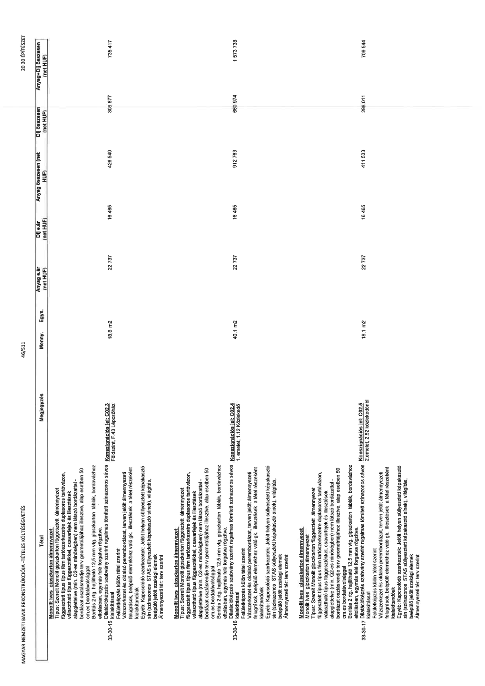

| Tétel | Megjegyzés | Menny. | Egys. | Anyag e.ár (net HUF) | Díj e.ár (net HUF) | Anyag összesen (net HUF) | Díj összesen (net HUF) | Anyag+Díj összesen (net HUF) |
|---|---|---|---|---|---|---|---|---|
| 33-30-15 Monolit íves gipszkarton álmennyezet Típus: Szerelt Monolit gipszkarton függesztett álmennyezet függesztett típus fém tartószerkezetre duplasoros tartóvázon, vázszerkezet (típus) rögzítőelemekkel, csavarfejek és illesztések alapglettelve (min. Q2-es minőségben) nem látszó bordázattal - bordázat osztásrendje terv geometriájához illesztve, alap esetben 50 cm-es bordatávolsággal Borítás 2 rtg. hajlítható 12,5 mm vtg. gipszkarton táblák, bordavázhoz eltolásban, egymás felé forgatva rögzítve, Dilatációképzés szabvány szerint rugalmas tömített színazonos sávos kialakítással | Konszignációs jel: C02.3 Földszint, F.43 Lépcsőház | 18,8 | m2 | 22 737 | 16 465 | 426 640 | 308 877 | 735 417 |
| 33-30-16 Monolit íves gipszkarton álmennyezet Típus: Szerelt Monolit gipszkarton függesztett álmennyezet függesztett típus fém tartószerkezetre duplasoros tartóvázon, vázszerkezet (típus) rögzítőelemekkel, csavarfejek és illesztések alapglettelve (min. Q2-es minőségben) nem látszó bordázattal - bordázat osztásrendje terv geometriájához illesztve, alap esetben 50 cm-es bordatávolsággal Borítás 2 rtg. hajlítható 12,5 mm vtg. gipszkarton táblák, bordavázhoz eltolásban, egymás felé forgatva rögzítve | Konszignációs jel: C02.4 1. emelet, 1.12 Közlekedő | 40,1 | m2 | 22 737 | 16 465 | 912 763 | 660 974 | 1 573 738 |
| 33-30-17 Monolit íves gipszkarton álmennyezet Típus: Szerelt Monolit gipszkarton függesztett álmennyezet függesztett típus fém tartószerkezetre duplasoros tartóvázon, vázszerkezet (típus) rögzítőelemekkel, csavarfejek és illesztések alapglettelve (min. Q2-es minőségben) nem látszó bordázattal - bordázat osztásrendje terv geometriájához illesztve, alap esetben 50 cm-es bordatávolsággal Borítás 2 rtg. hajlítható 12,5 mm vtg. gipszkarton táblák, bordavázhoz eltolásban, egymás felé forgatva rögzítve Dilatációképzés szabvány szerint rugalmas tömített színazonos sávos kialakítással | Konszignációs jel: C02.5 2.emelet, 2.52 közlekedőnél | 18,1 | m2 | 22 737 | 16 465 | 411 533 | 298 011 | 709 544 |
